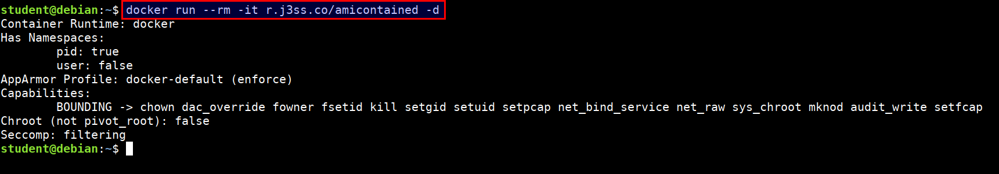

amicontained
This is a container introspection tool that lets you find out what container runtime is being used as well as the features available.
- Docker container running with no privileges
docker run --rm -it r.j3ss.co/amicontained -d

- Docker container running with host privileges
docker run --rm -it --pid host r.j3ss.co/amicontained -d

- Docker container running with apparmor profile security options
docker run --rm -it --security-opt "apparmor=unconfined" r.j3ss.co/amicontained -d